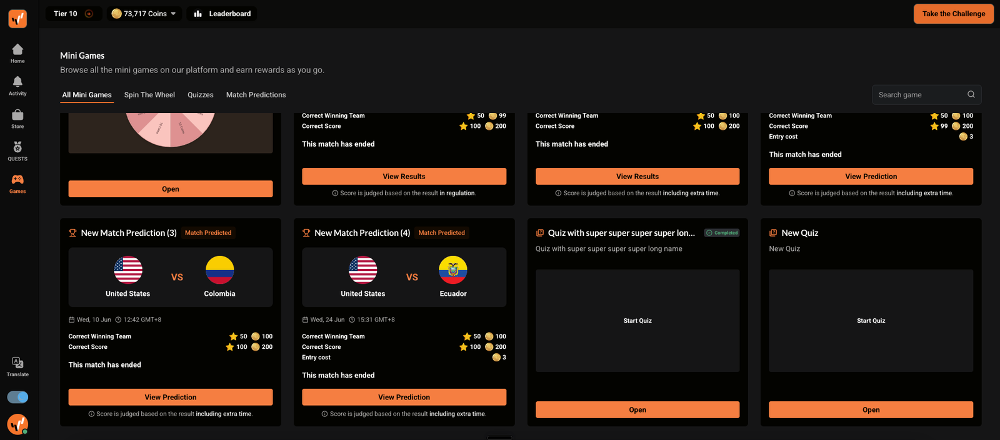
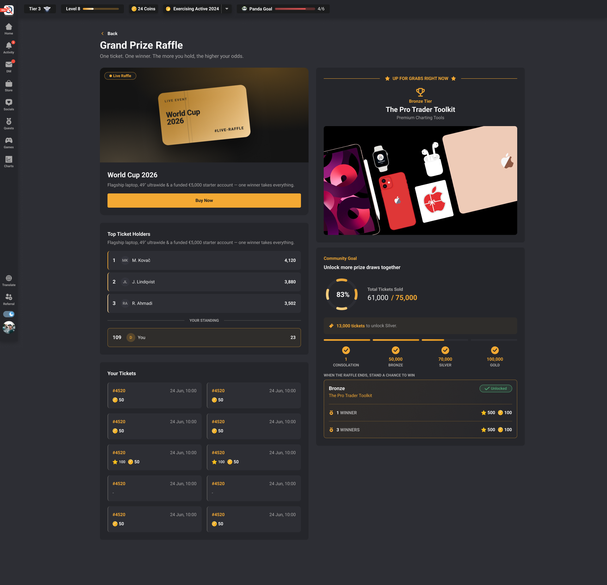
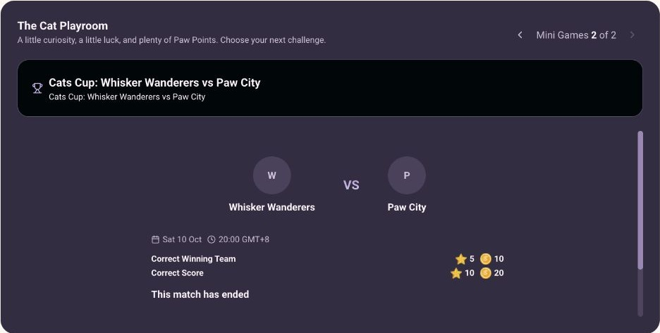
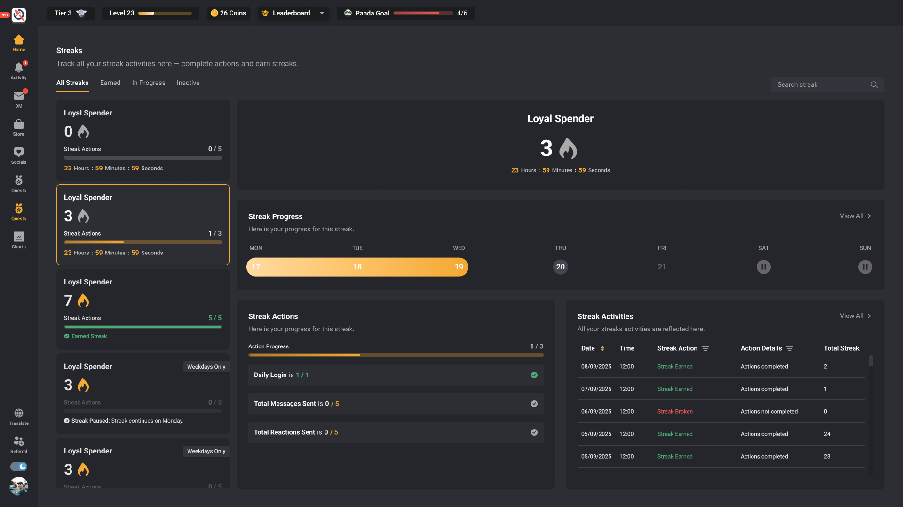

Product features / a closer look
The rules behind
the little moments.
Progress, play, connection and consistency. Seven feature pages connect each product’s flow, design intent, visible screens and portable delivery surface.
Original design evidence, current staging screens and interactive explanations.
Progression / conditions / rewards
Milestones
A progress bar becomes useful when the next requirement is legible.
 02
02An engagement family / different participation models
Mini Games
A shared shell should preserve each game’s meaning.

03Mini Games / eligibility / feedback
Spin the Wheel
The spin connects earning, feedback and a traceable result.
 04
04Participation / community goals / collaboration
Raffles
A future prize should never look as if it is already unlocked.

05Mini Games / scheduling / reusable teams
Match Prediction
Kickoff tells you when the match begins. Prediction end tells you when edits stop.

06External identity / verification / recovery
Social Quests
A connected account and a verified quest are different states.
Time / consistency / source authority
Streaks
Hiding a display section should not erase its saved configuration.
